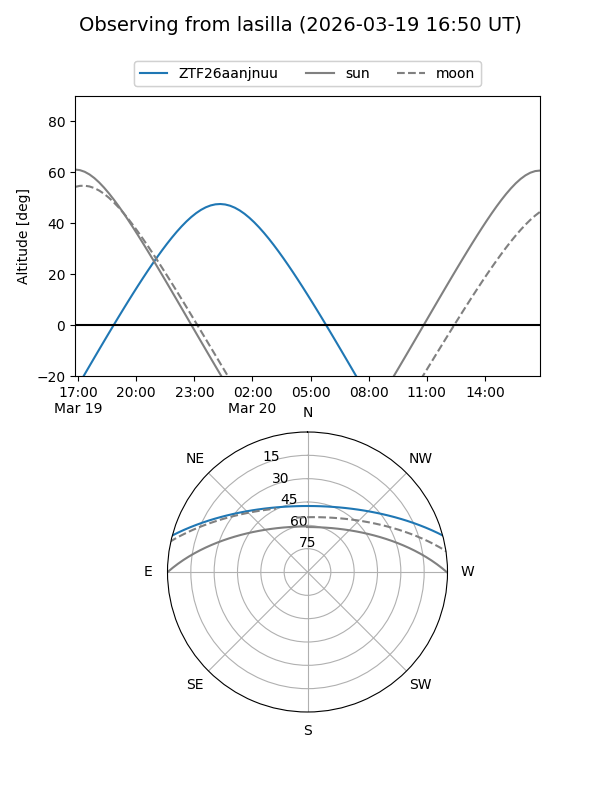
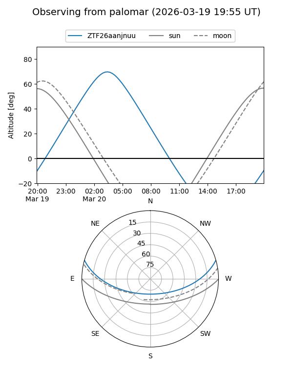

ZTF26aanjnuu
Target ZTF26aanjnuu at 2026-03-20 04:13
Aliases and brokers:
FINK: link
Lasair: link
ALeRCE: link
alt names
ZTF26aanjnuu (ztf,fink_ztf)
Coordinates:
equatorial (ra, dec) = 111.2393,+13.22615
equatorial (HMS+DMS) = 07:24:57.43,+13:13:34.15
galactic (l, b) = (204.7230,+13.33172)
Flags:
Photometry:
last ztfg=16.98
1 ztfg detections
Lightcurve
Visibility


Additional plots